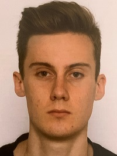

À propos de moi
Je suis actuellement étudiant de première année en BTS SIO (Services Informatiques aux Organisations) au Lycée CCI Guard à Nîmes (30), en spécialité SLAM (Solutions Logiciels et Applications Métiers).
Le choix de ma spécialité SLAM était, pour moi, sans hésitation étant donné que je suis un passionné d'informatique et de nouvelles technologies mais plus particulièrement du domaine de la programmation. Ce qui m'amène à utiliser beaucoup de mon temps libre à en apprendre d'avantage sur différents languages de programations.
Vous pourrez retrouver dans mon portfolio, toutes les compétences que j'ai acquis au cours de mes années d'études ainsi qu'en autodidacte.
Mon Cursus
Dîplomes :
2022 : Préparation d'un BTS SIO, Spécialisation SLAM
2020 : Baccalauréat STI2D, Spécialisation SIN
2016 : Dîplome de premiers secours PSC1
2016 : Brevet des collèges DNB
Expériences professionnelles :
2020 : 2 mois au ramassage des ordures pour le Pays de l’Or
2019 : 2 mois de contrat saisonnier chez Burger King de Saint-Aunès
2019 : 1 mois en tant qu'employé saisonnier pour la Mairie de Saint-Aunès
2016 : 1 semaine de stage d'observation à la cave Les Coteaux de Saint-Christol
Projet après le BTS
À la suite de mon BTS SIO (Services Informatiques aux Organisations), j'ai l'intention de poursuivre mes études avec une Licence Professionnelle en Informatique

Nom : Nardella
Prénom : Victor
Date de naissance : 19/04/2001
Àge : 19 ans
Sexe : Masculin
Taille : 1,82 mètres
Localisation : Montpellier (34)